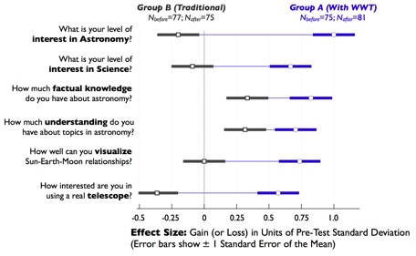

Students reported a greater interest in astronomy and science after spending six weeks with WWT (compared with students who only used "traditional" methods that year). Parents reported that their children seemed far more engaged with astronomy topics after making their own tours (for example, compared with an older sibling who had the same teacher in a prior year, but used the textbook instead of WWT). One student declared in front of his whole class, "This is way cooler than Call of Duty!"